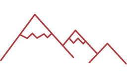
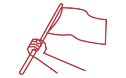

Para asegurar la independencia de las Provincias Unidas del Río de la Plata (actual Argentina) y Chile, era necesario eliminar el principal foco realista en Sudamérica. En un inicio, tres expediciones militares terrestres fueron enviadas desde Buenos Aires al Alto Perú, pero resultaron en sendos fracasos. Eso convenció al Ejército Libertador de la necesidad de organizar una campaña marítima. Para ello, el gobierno de O’Higgins adquirió algunos buques y contrató los servicios de un destacado marino británico, Lord Thomas Cochrane, quien abrió el camino para el inicio de operaciones en el territorio peruano.
Joaquín de la Pezuela y Sánchez Muñoz de Velasco
1816-1820, óleo sobre tela, 212 x 145.5 cm
Sucesor de Fernando de Abascal en el cargo de virrey del Perú, Joaquín de la Pezuela tuvo que hacer frente a las expediciones militares patriotas enviadas desde Chile y el Río de la Plata. Pezuela entró en conversaciones con José de San Martín tras el desembarco del Ejército Libertador del Sur en Paracas, pero fue depuesto por el general realista José de la Serna en 1821, poco antes de que el ejército patriota ocupase Lima por primera vez.
Pedro Bermúdez Ascarza
José Gil de Castro - Pedro Bermúdez Ascarza
1832, óleo sobre tela, 101 x 75 cm
En 1820, tras sumarse en Pisco al Ejército Libertador del general San Martín, Pedro Bermúdez intervino en la Primera Campaña de la Sierra dirigida por el general Juan Antonio Álvarez de Arenales. En los siguientes años, continuó formando parte de las acciones militares patriotas, como la infructuosa Segunda Campaña a Intermedios, en 1822. Bermúdez se integró después al ejército de Bolívar y tuvo una participación destacada en las batallas de Junín y Ayacucho.
La difícil conquista del mar peruano
Producido por MNAAHP
Francisco de Paula Otero
José Gil de Castro - Francisco de Paula Otero
1829, óleo sobre tela, 69.5 x 58 cm

Reverso de la pintura de Francisco de Paula Otero
Reproducción fotográfica, 35 x 29 cm
Establecido en Tarma desde inicios del siglo XIX, Francisco de Paula Otero se dedicó al comercio y al arrieraje en la sierra central. En 1820 se sumó al Ejército Libertador, organizando guerrillas de montoneros que hostilizaban a las tropas españolas. También tendría una participación destacada en 1824 durante la batalla de Ayacucho. Este retrato de Francisco de Paula Otero fue dedicado a su hija, Melchora. La familia radicó en Tarma, donde Francisco fue comerciante y ejerció algunos cargos públicos hasta su muerte en 1854. Melchora junto a su hermana Dominga tomaron votos religiosos y establecieron una casa de beatas. A fines del siglo XIX, ambas fallecieron en el convento de Santa Rosa de Ocopa (Junín).
Los montoneros
Indios, campesinos, mineros, arrieros, hombres y mujeres del pueblo que participaron de manera determinante en las luchas por la independencia, apoyando a los ejércitos del general San Martín y de Simón Bolívar. Se unieron a la causa libertadora entre 1809 y 1824 con la esperanza de que sus condiciones de vida mejoraran con la expulsión de los españoles.
Importancia
-  Su apoyo a los ejércitos de los libertadores entre 1816 y 1824 fue fundamental para el triunfo final.
- Conocían mejor los ríos y caminos.
-  Desestabilizaban a las fuerzas realistas atacando en “montón”, de ahí su nombre.